At a modern-day nursing home, an elderly man, Duke, reads a romantic story from his notebook to a fellow patient. In 1940s Seabrook Island, South Carolina, Noah Calhoun is smitten with seventeen-year-old heiress Allie Hamilton after seeing her at a carnival, and they have a summer love affair. Noah takes Allie to an abandoned house, that he intends to buy for them. They try to make love, but are interrupted by Noah's friend Fin with the news that Allie's parents have the police looking for her. When Allie and Noah return to her parents' mansion, they ban her from seeing Noah. Allie's mother, Ann, calls Noah trash, he walks out and Allie chases after him. The ensuing argument between the two ends in a break up and the next morning, Ann announces that the family is returning home to Charleston. Allie attempts to contact Noah, but is unable to find him, so she asks Fin to tell Noah that she loves him. When Noah gets the message he finds the family's house empty. Noah writes to Allie every day for a year but Allie's mother intercepts them and they never reach Allie. Noah enlists with Fin to fight in World War II, where Fin is killed in battle. Allie volunteers in a hospital for wounded soldiers, where she meets officer Lon Hammond, Jr., a young lawyer who comes from old Southern money. The two become engaged, to the delight of Allie's parents. When Noah returns home from the war, his father sold their home so Noah can buy the abandoned house. While visiting Charleston, Noah witnesses Allie and Lon kissing at a restaurant; he convinces himself that if he restores the house, Allie will come back to him. Allie is startled to read in the newspaper that Noah has completed the house to the specifications she'd made years prior, and visits him in Seabrook. In the present, it is revealed that the elderly woman is Allie, who is suffering from dementia. Duke is her husband, but Allie does not recognize him, nor remember any of the events Duke is reading to her. Back in the forties, Allie returns to Seabrook to find Noah living in the restored house. The two renew their relationship and make love. In the morning, Ann appears on Noah's doorstep, warning Allie that Lon has followed her to Seabrook. She gives Allie the letters that Noah had written to her, admitting that she had hidden them from Allie. Ann reveals that in her youth she had been in love with a lower class young man and still thinks of him. Allie confesses to Lon that she has been spending time with Noah. Allie tells Lon she knows she should be with him, but she remains indecisive. In the present, Allie briefly becomes lucid. She remembers that the story Duke is reading is the story of how they met. Duke tells her how she appeared at Noah's doorstep with her belongings, having left Lon at the hotel, and Allie suddenly remembers her past. At the onset of her dementia, she wrote their love story in the notebook with instructions for Noah to "read this to me, and I'll come back to you." But Allie soon relapses, losing her memories of Noah. She panics, not understanding who he is, and has to be sedated. Duke, who is in fact Noah, is hospitalized with what seems to be a heart attack. When he is released from the hospital, Noah visits Allie and finds her lucid again. Allie asks Noah what will happen to them when she loses her memory completely, and he reassures her that he will never leave her. She asks him if he thinks their love for each other is strong enough and he replies their love can do anything. After each tells the other that they love them, they both go to sleep in Allie's bed. The next morning a nurse finds that they have died peacefully in bed together.
In 1987, Jordan Belfort (Leonardo DiCaprio) procures a job as a Wall Street stockbroker for L.F. Rothschild, employed under Mark Hanna (Matthew McConaughey), who quickly entices him to the addictive tendencies of stockbroker culture, as well as fostering a mentality around absolute self-profit. Jordan soon finds his career terminated following Black Monday. He takes a job at a boiler room brokerage firm on Long Island that specializes in penny stocks. Thanks to his aggressive pitching style and the high commissions, Jordan makes a small fortune. Jordan befriends his apartment neighbor Donnie Azoff (Jonah Hill), and the two found their own company. They recruit Jordan's accountant parents as well as several of Jordan's friends, whom Jordan trains in the art of the "hard sell". The basic method of the firm is a pump and dump scam. To cloak this, Jordan gives the firm the respectable name of "Stratton Oakmont". After an expose in Forbes, hundreds of ambitious young financiers flock to his company. Jordan becomes immensely successful, he slides into a decadent lifestyle of prostitutes and drugs. He has an affair with a woman named Naomi Lapaglia (Margot Robbie). When his wife Teresa (Cristin Milioti) finds out, they divorce and he marries Naomi, soon having a daughter, Skylar. Meanwhile, the U.S. Securities and Exchange Commission and the FBI begin investigating Stratton Oakmont. Jordan illegally makes $22 million in three hours upon securing the IPO of Steve Madden (Jake Hoffman). This brings him and his firm to the attention of the FBI, mainly agent Patrick Denham (Kyle Chandler). To hide his illegitimate money, Jordan opens a Swiss bank account with corrupt banker Jean-Jacques Saurel (Jean Dujardin) in the name of Naomi's aunt Emma (Joanna Lumley), who is a British citizen and thus outside the reach of American authorities. He uses the wife and in-laws of his friend Brad Bodnick (Jon Bernthal), who have European passports, to smuggle the cash into Switzerland. Donnie gets into a public fight with Brad, and while Donnie escapes, Brad is arrested. Jordan also learns from his private investigator (Bo Dietl) that the FBI is wiretapping his phones. Fearing for his son, Jordan's father (Rob Reiner) pressures him to leave Stratton Oakmont and lie low while Jordan's lawyer (Jon Favreau) orchestrates a deal to keep him out of prison. Jordan, however, cannot bear to quit, and talks himself into staying in the middle of his farewell speech. Jordan, Donnie and their wives are on a yacht trip to Portofino, Italy when they learn that Aunt Emma has died of a heart attack. Over the objections of his grieving wife and his yacht captain, Jordan decides to sail to Monaco so they can drive to Switzerland without getting their passports stamped at the border and settle the bank account, but a violent storm capsizes their yacht. After their rescue by Italian Coast Guard, the plane sent to take them to Geneva is destroyed when a seagull flies into the engine. Jordan considers this a sign from God and decides to sober up. Two years later, the FBI arrests Jordan because Saurel, while being arrested in Florida on an unrelated charge, has told the FBI about Jordan's criminal activities. Since the evidence against him is overwhelming, Jordan agrees to gather evidence on his colleagues in exchange for leniency. Fed up with Jordan's lifestyle, Naomi tells Jordan she is divorcing him and wants full custody of their children. After their argument turns violent, Jordan relapses on cocaine and attempts to kidnap their daughter Skylar before crashing his car into a fence. Naomi and Jordan's housekeeper rescue Skylar from the vehicle and leave Jordan, bleeding and defeated, in the car. The next morning, Jordan wears a wire to work. Jordan slips Donnie a note warning him about the wire. The FBI discovers the note, and Jordan is arrested for breaching his cooperation deal. The FBI raids and shuts down Stratton Oakmont. Despite this one breach, Jordan receives a reduced sentence for his testimony and is sentenced to 36 months in a minimum security prison in Nevada. After his 2006 release, Jordan makes a living hosting seminars on sales technique.
Charlie Simms is a student at an exclusive New England prep school. Unlike most of his peers, Charlie was not born to a wealthy family. To pay for a flight home to Oregon for Christmas, Charlie accepts a temporary job over Thanksgiving weekend looking after retired Army Ranger Lieutenant Colonel Frank Slade, whom Charlie discovers to be a cantankerous, blind alcoholic. Charlie and George Willis, Jr., another student at the preparatory school, witness three students setting up a prank for the school's headmaster, Mr. Trask. Following the prank, Trask presses Charlie and George to divulge the names of the perpetrators. Trask offers Charlie a bribe, a letter of recommendation that would virtually guarantee his acceptance to Harvard. Charlie continues to remain silent but appears conflicted. Shortly after Charlie arrives, Slade unexpectedly whisks Charlie off on a trip to New York City. Slade reserves a room at the Waldorf-Astoria. During dinner at the Oak Room, Slade glibly states the goals of the trip, which involve enjoying luxurious accommodations in New York before committing suicide. Charlie is taken aback and does not know if Slade is serious. They pay an uninvited surprise visit to Slade's brother's home in White Plains for Thanksgiving dinner. Slade is an unpleasant surprise for the family, as he deliberately provokes everyone and the night ends in acrimony. During this time the cause of Slade's blindness is also revealed as a drunken trainee mishap with a grenade. As they return to New York, Charlie tells Slade about his complications at school. Slade advises Charlie to inform on his classmates and go to Harvard, warning him that George will probably be pressured into not maintaining his silence. Later at a restaurant, Slade is aware of Donna, a young woman waiting for her date. Although blind, Slade leads Donna in a spectacular tango ("Por una Cabeza") on the dance floor. That night, he hires a female escort. Deeply despondent the next morning, Slade responds to Charlie's suggestion that they test drive a Ferrari Mondial t. Charlie lets Slade drive the car and Slade begins speeding, attracting the attention of a police officer, whom Slade manages to appease without giving away his blindness. When they return to the hotel, Slade sends Charlie out on a list of errands. Charlie initially leaves the room but quickly becomes suspicious. Charlie returns to find Slade in his full-dress military uniform, preparing to commit suicide with a gun from which Charlie had made Slade promise to remove the bullets earlier, regarding which Slade states "I lied". Charlie intervenes and attempts to grab Slade's gun. Slade, however, easily overpowers him, threatening to shoot Charlie before himself. They enter a tense argument, with both grappling for the gun; however, after Charlie bravely calms Slade, Slade backs down. The two return to New England. At school, Charlie and George are subjected to a formal inquiry in front of the entire student body and the student/faculty disciplinary committee. As headmaster Trask is opening the proceedings, Slade unexpectedly returns to the school, joining Charlie on the auditorium stage for support. For his defense, George has enlisted the help of his wealthy father, using his poor vision as an excuse before being pressured by his father into naming all three of the perpetrators. When pressed for more details, George passes the burden to Charlie. Although struggling with his decision, Charlie gives no information, so Trask recommends Charlie's expulsion. At this, Slade cannot contain himself and launches into a passionate speech defending Charlie and questioning the integrity of a system that rewards informing on classmates. He tells them that Charlie has shown integrity in his actions and insists the committee not expel him because this is what great leaders are made of, and promises he will make them proud in the future. The disciplinary committee decides to place on probation the students named by George, and to give George neither recognition nor commendation for his testimony. They excuse Charlie from any punishment and allow him to have no further involvement in the inquiries, to thunderous applause from the student body. As Charlie escorts Slade to his limo, a female political science teacher, Christine Downes, who was part of the disciplinary committee, approaches Slade, commending him for his speech. Seeing a spark between them, Charlie tells Ms. Downes that Slade served on President Lyndon Johnson's staff. Charlie takes Slade home. The colonel walks towards his house and greets his niece's young children happily as Charlie watches by the limo.
At morning in Paris, Driss is driving Philippe's Maserati at high speed. They are chased through the streets by the police, and eventually cornered. Driss claims the quadriplegic Philippe must be urgently driven to the emergency room; Philippe pretends to have a seizure and the fooled police officers escort them to the hospital. The story of the friendship between the two men is then told as a flashback: Philippe, a wealthy quadriplegic who owns a luxurious hotel particulier, and his assistant Magalie, are interviewing candidates to be his live-in caregiver. Driss, a candidate, has no ambitions to get hired. He is just there to get a signature showing he was interviewed and rejected in order to continue receiving his welfare benefits. He is told to come back the next morning to get his signed letter. The next day, Driss returns and learns that he is on a trial period for the live-in caregiver job. Despite being uninterested in the job and his lack of professional experience, Driss does well caring for Philippe, even if his methods are unconventional. Driss learns the extent of Philippe's disability and accompanies Philippe in every moment of his life, assisting him in all the ways needed. A friend of Philippe's reveals Driss's criminal record which includes six months in jail for robbery. Philippe states he does not care about Driss's past because he is the only one that does not treat him with pity. He says he will not fire him as long as he does his job properly. Philippe discloses to Driss that he became disabled following a paragliding accident and that his wife died without bearing children. Gradually, Philippe is led by Driss to put some order in his private life, including being stricter with his adopted daughter Elisa. Driss discovers modern art, opera, and even takes up painting. For Philippe's birthday, a private concert of classical music is performed in his living room. After the concert, Driss plays Earth, Wind & Fire's "Boogie Wonderland" and Philippe has a birthday that is not as boring as the ones he has had in the past. Driss discovers that Philippe has a purely epistolary relationship with a woman called Eleonore, who lives in Dunkirk. Driss encourages him to meet her, but Philippe fears her reaction when she discovers his disability. Driss eventually convinces Philippe to talk to Eleonore on the phone. Philippe agrees with Driss to send a photo of him in a wheelchair to her, but he hesitates and asks his aide, Yvonne, to send a picture of him as he was before his accident. A date between Eleonore and Philippe is agreed. At the last minute, Philippe is too scared to meet Eleonore and leaves with Yvonne before Eleonore arrives. Philippe then calls Driss and invites him to travel with him in his private jet for a paragliding weekend. Adama, Driss's younger cousin, who is in trouble with a gang, comes to fetch Driss at Phillipe's mansion on the pretext of delivering mail. Overhearing, Philippe recognizes Driss's need to be supportive to his family and releases him from his job, suggesting he may not want to push a wheelchair all his life. Driss returns to his urban projects, joining his friends, and manages to help his younger cousin. In the meantime, Philippe has hired caregivers to replace Driss, but he is not happy with any of them. His morale is very low and he stops taking care of himself. Yvonne becomes worried and contacts Driss, who arrives and decides to drive Philippe in the Maserati, which brings the story back to the first scene of the film, the police chase. After they have eluded the police, Driss takes Philippe to the seaside. Upon shaving and dressing elegantly, Philippe and Driss arrive at a Cabourg restaurant with a great ocean view. Driss suddenly leaves the table and says good luck to Philippe for his lunch date. A few seconds later, Eleonore arrives. Emotionally touched, Philippe looks through the window and sees Driss outside, smiling at him. Driss bids Philippe farewell and walks away. The film ends with shots of Philippe Pozzo di Borgo and Abdel Sellou, the people on whom the film is based, together on a hillside, reminiscent of the paragliding scene earlier in the film. The closing caption states how the men remain close friends to this day.
Septuagenarian best friends Fred Ballinger and Mick Boyle are on vacation in the Swiss Alps, staying at a luxury resort. Fred is a retired composer of classical music; at the hotel, he is approached by an emissary for Queen Elizabeth II to perform his popular piece "Simple Songs" at her husband Prince Philip's birthday concert. Fred turns down the offer, claiming he is not interested in performing anymore - although he still composes pieces in his head when alone. Mick is a filmmaker, and is working with a group of writers to develop the screenplay for his latest film, which he calls his "testament". Also with them is actor Jimmy Tree, who is researching for an upcoming role and frustrated that he is only remembered for his role as a robot. The hotel is inhabited by other quirky individuals, including a young masseuse, an overweight Diego Maradona, and Miss Universe. Fred and Mick reflect on their lives, admitting that their memories are fading and that they see little in their futures. Fred's daughter and assistant, Lena, is married to Mick's son, but the latter leaves her for pop star Paloma Faith. Lena stays at the resort and vents her anger at her father, who was always distant as she grew up. The emissary returns, and Lena cries as Fred explains that he won't perform "Simple Songs" because the soprano part belongs only to his wife and she can't sing anymore. Mick completes his screenplay and is satisfied with it. The main role is written for aging diva Brenda Morel, who has starred in eleven of his previous films. Brenda surprises Mick by arriving at the resort, and telling him that she is taking a television role instead; cinema is the past, she says, and Mick hasn't made a good film in years. Disheartened, Mick jumps off a balcony in front of Fred. Fred decides to visit his wife for the first time in years. She is senile, and living at a care home in Venice. He then returns to the UK to conduct "Simple Songs" in front of the Queen and Prince. Interspersed throughout the film are surreal sequences, including a levitating monk, an imagined Paloma Faith music video, Jimmy dressed as Adolf Hitler, Fred conducting a field of cowbells, and Mick envisioning all his previous leading ladies on a mountaintop (including Brenda, in her new unglamorous TV role).
Freddie Quell is a sex-obsessed alcoholic World War II veteran from Lynn, Massachusetts, struggling to adjust to post-war society. By 1950, he has become a portrait photographer at a department store, but he is soon fired for getting into a drunken fight with a customer. Freddie then finds work at a Salinas, California cabbage farm, but his moonshine poisons one of the elderly Filipino migrant workers and he is chased off. One night, intoxicated, Freddie finds himself in San Francisco and stows away on the yacht of a follower of Lancaster Dodd, the leader of a nascent philosophical movement known as "The Cause." When he is discovered, Dodd describes Freddie as "aberrated" and invites him to stay and attend the marriage of his daughter, Elizabeth, as long as he will make more of his mysterious brew (made with paint thinner), which Dodd has developed a taste for. Dodd begins an exercise with Freddie called Processing, a flurry of disturbing psychological questions aimed at conquering Freddie's past traumas. Freddie reveals that his father is dead, his mother is institutionalized, he had an incestuous relationship with his aunt, and he abandoned the love of his life, a young girl named Doris, who wrote to him while he was at war. Freddie is enthralled by Dodd, who doesn't flinch from his abject revelations, and Dodd sees something in Freddie. Freddie travels with Dodd's family as they spread the teachings of "The Cause" along the East Coast. Dodd and his family, with Freddie tagging along, stay as guests in the homes of various women drawn to "The Cause." But when at a dinner party in New York, a man questions Dodd's methods and statements, Freddie pursues him to his apartment and assaults him that night. Other members of "The Cause" begin to worry about Freddie's behavior, despite Dodd's attachment to him. While they are guests of an acolyte in Philadelphia, Dodd's wife Peggy tells Freddie that he must quit drinking if he wishes to stay, to which he agrees. However, he has no true intention of keeping his promise. Freddie criticizes Dodd's son Val for disregarding his father's teachings, but Val tells Freddie that Dodd is making things up as he goes along. Dodd is arrested for practicing medicine without proper qualifications, after one of his former hostesses has a change of heart; Freddie is also arrested for assaulting the police officers. In the jail cell adjacent to Dodd, Freddie smashes the toilet and batters himself against the bars and his bunk, while Dodd tries to calm him. Freddie erupts in a tirade, questioning everything that Dodd has taught him and accuses him of being a fake. The two men trade insults until Dodd turns his back. They reconcile upon their release, but members of "The Cause" have become more suspicious and fearful of Freddie, believing him to be deranged or an undercover agent. Freddie submits to additional exercises with "The Cause" but becomes increasingly angry and frustrated with the repetition of the exercises and his lack of results. Eventually he passes the tests, and they travel to Phoenix, Arizona, for the release of Dodd's latest book. But when Dodd's publisher criticizes the quality of the book and its teachings, Freddie assaults him. Helen Sullivan, their Philadelphia hostess, confronts Dodd in the lecture hall for suggesting that members should now "imagine" rather than "recall" the experiences of "other lives" in his new book, and he also loses his temper. During another exercise, in which Freddie is supposed to ride a motorcycle at high speed through the desert towards an object in the distance and then return, he instead abandons the group, riding the motorcycle out of the desert, and leaving Dodd and "The Cause" behind. He goes home to rekindle his relationship with Doris but learns from her mother that she has married and started a family in Alabama in the seven years since he last saw her. Freddie leaves disappointed. While sleeping in a movie theater, Freddie receives a phone call (or dreams that he has) from Dodd, who is now residing in England. Freddie is asked to come join him. When Freddie arrives, he discovers Val is still in his father's employ and that Elizabeth has been expelled from the movement. Dodd seems happy to see him but Peggy tells him that Freddie has no intention of improving his life and that he should no longer be involved in "The Cause." Dodd finally realizes that his wife is correct. He gives Freddie an ultimatum: stay with "The Cause" and devote himself to it for the rest of his life or leave and never return. Dodd then serenades Freddie with the song Slow Boat to China. Freddie leaves and picks up a woman at a local pub, then repeats questions from his first processing session with Dodd as he is having sex with her. Finally, he appears to curl up on a beach next to the crude sand sculpture of a woman the sailors built during the war.
“잘못된 건 없어, 처음부터 너만 없었으면 돼…”
한 소년이 죽었다. 평소 아들에게 무심했던 소년의 아버지(조성하)는 아들의 갑작스런 공백에 매우 혼란스러워하며 뒤늦은 죄책감과 무력함에, 아들 기태(이제훈)의 죽음을 뒤쫓기 시작한다. 아들의 책상 서랍 안, 소중하게 보관되어 있던 사진 속에는 동윤(서준영)과 희준(박정민)이 있다. 하지만 학교를 찾아가 겨우 알아낸 사실은 한 아이는 전학을 갔고 한 아이는 장례식장에 오지도 않았다는 것. 뭔가 이상하다. 그러던 중, 간신히 찾아낸 희준은 ‘기태와 제일 친했던 것은 동윤’이라고 말하며 자세한 대답을 회피한다. 결국 아버지의 부탁으로 동윤을 찾아나선 희준. 하지만, 학교를 자퇴하고 떠나버린 친구는 어디에도 없다. 천진하고 순수했던 그 시절, 미성숙한 소통의 오해가 불러 일으킨 비극적 파국. 독단적 우정이 가져온 폭력과 그 상처의 전염은 우리를 아프고 충격적인 결말로 이끌어간다. 서로가 전부였던 이 세 친구들 사이에서 과연 무슨 일이 벌어진 걸까?
 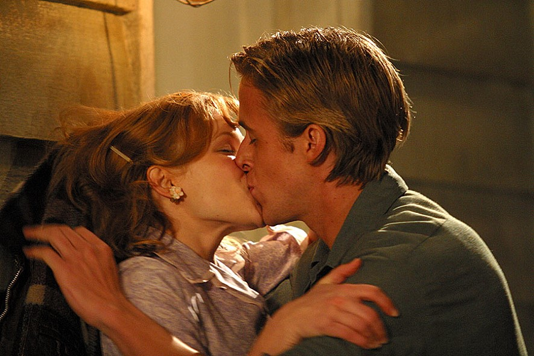
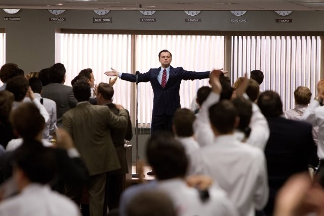
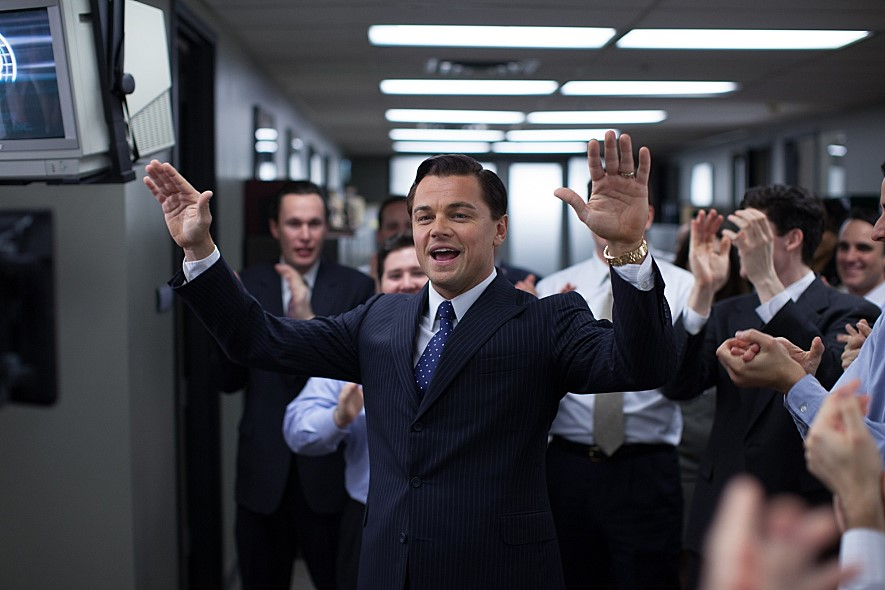
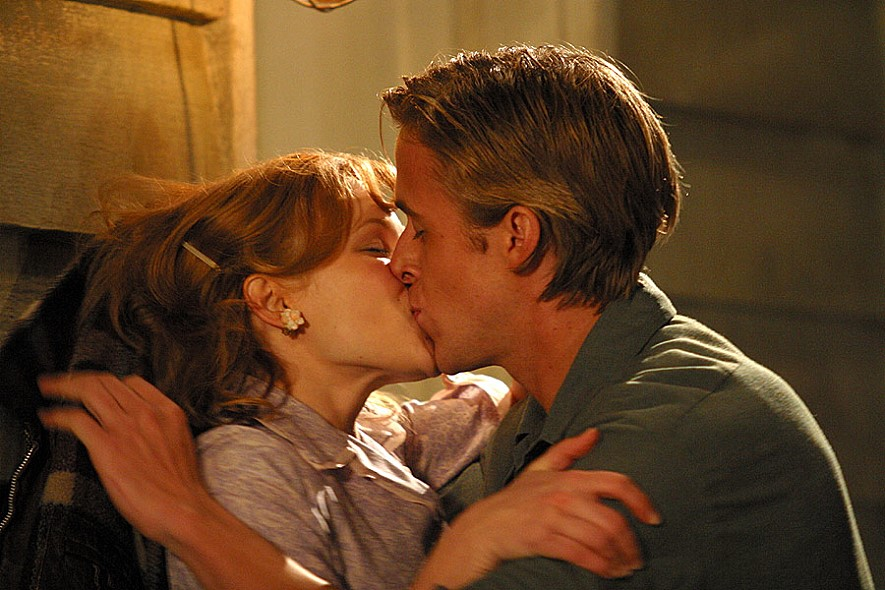
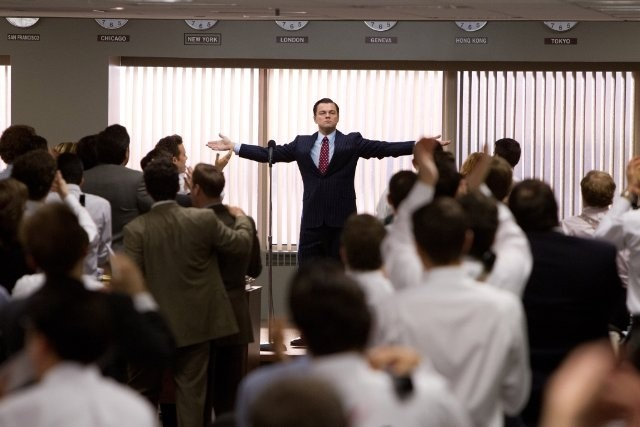
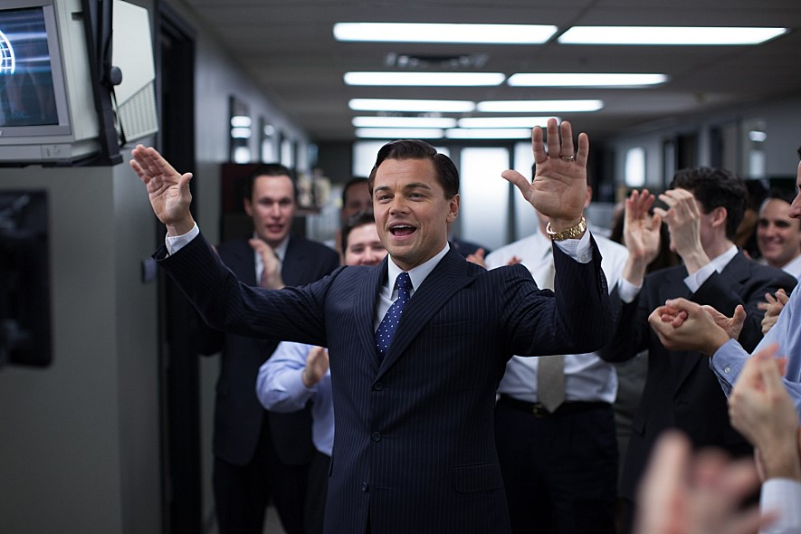
 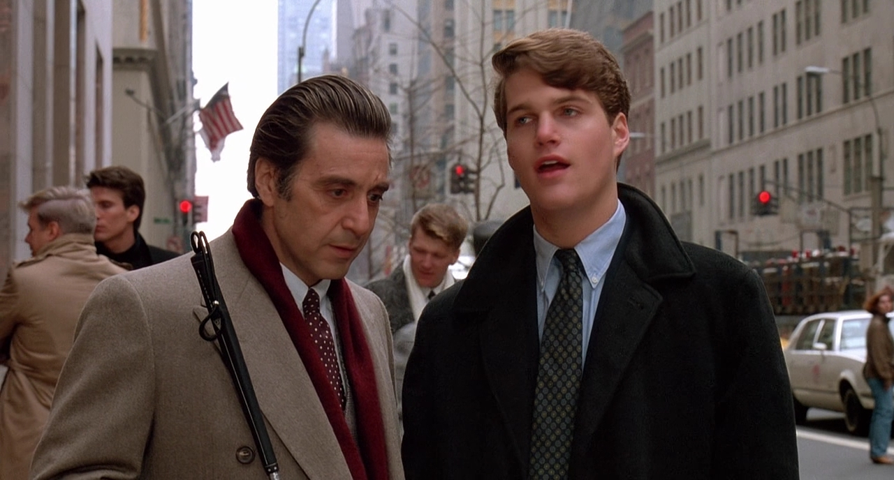
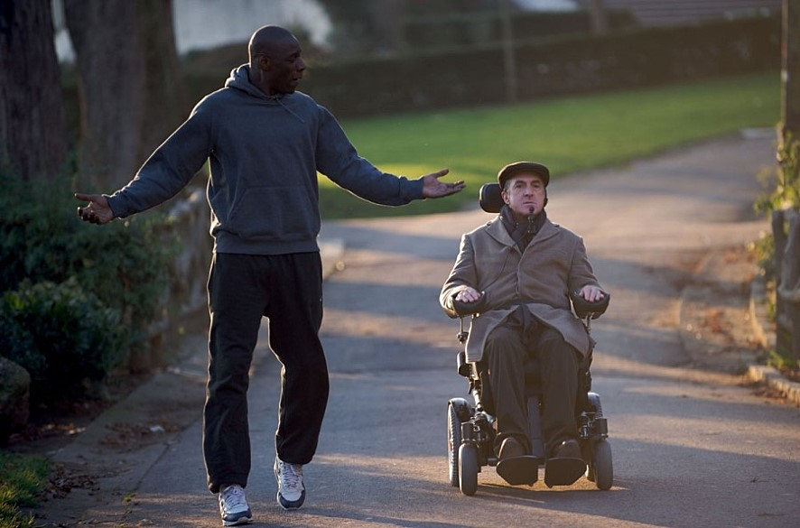
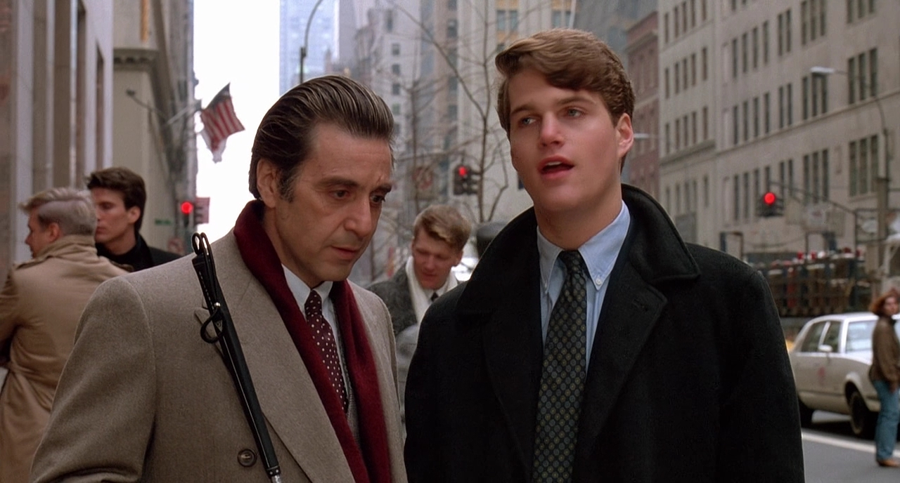
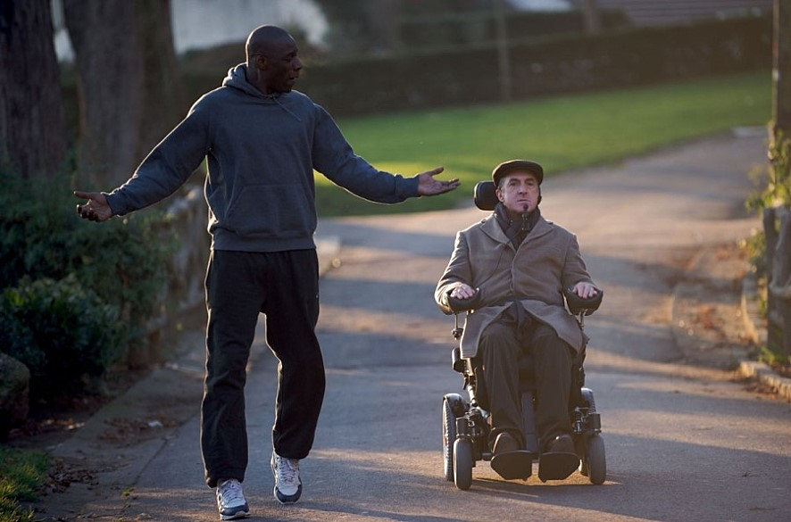

 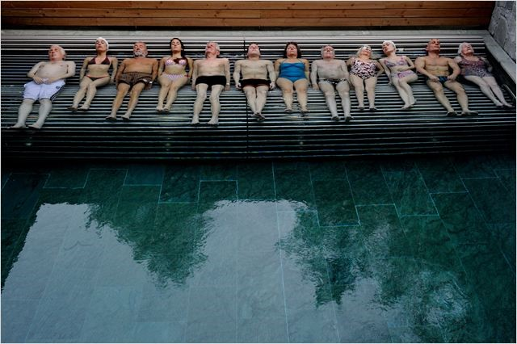
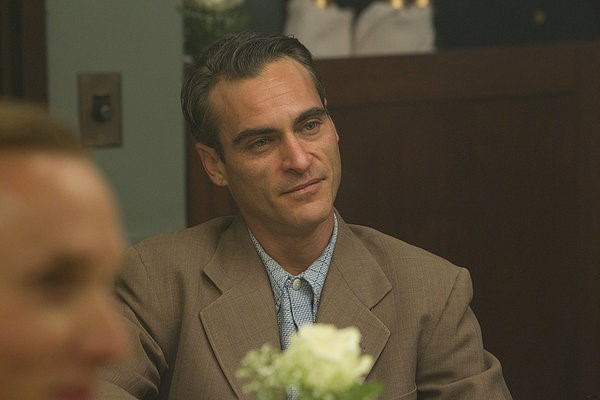
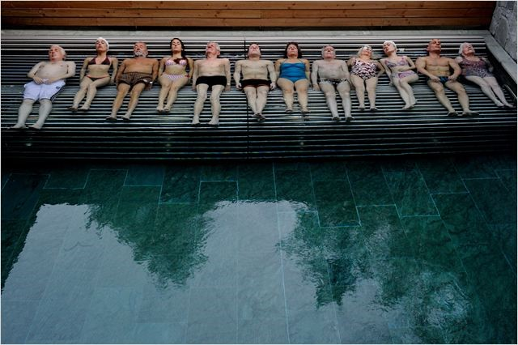
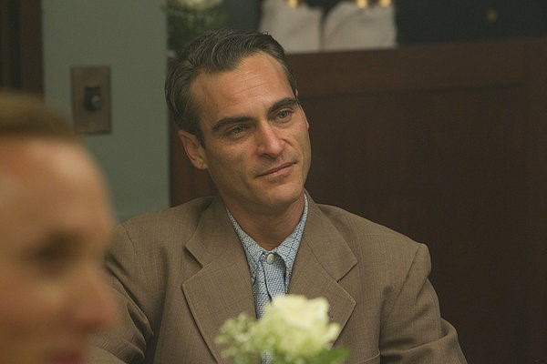

 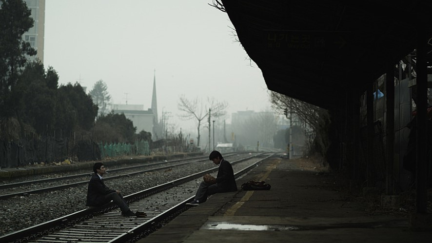
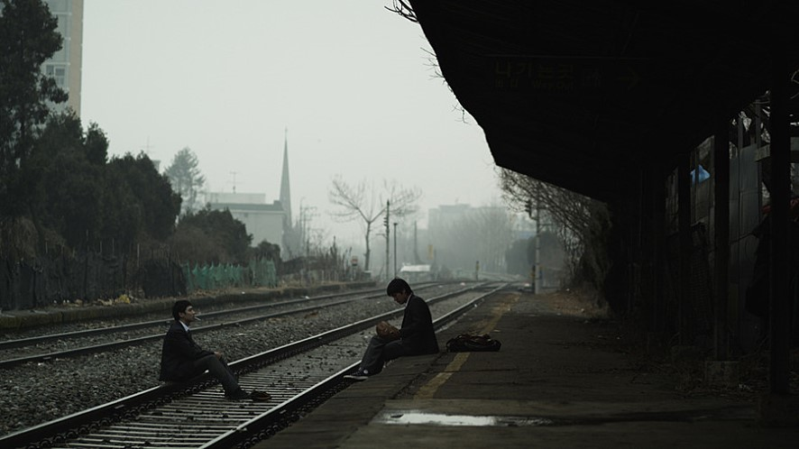